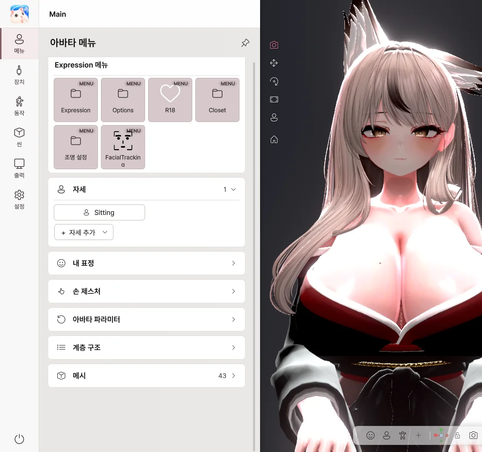
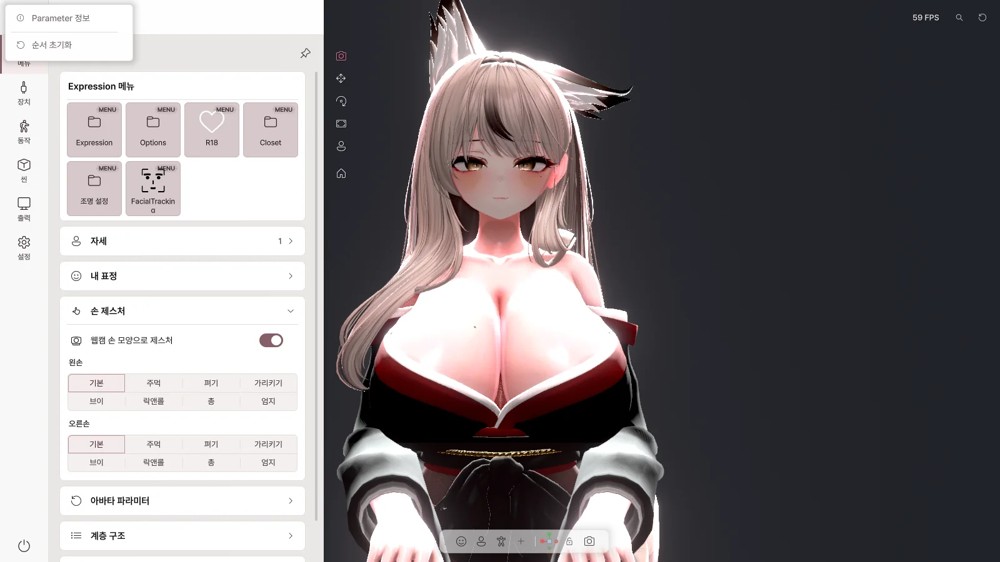
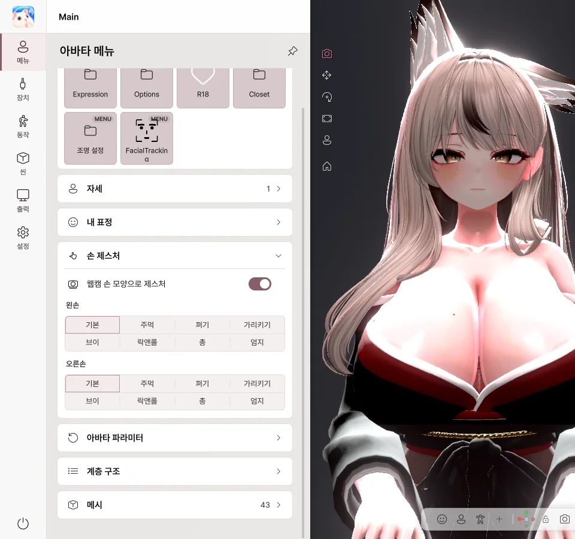
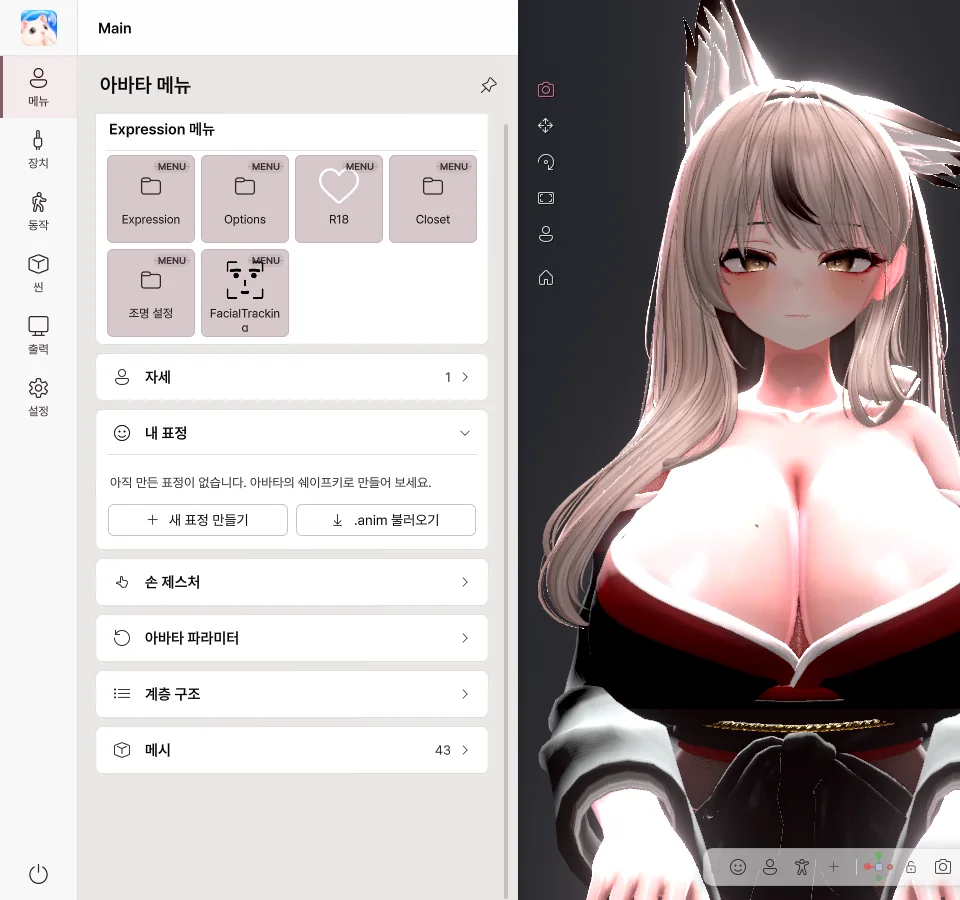

5. 아바타 메뉴
v2.0.0 아바타 메뉴: 토글·값·제스처가 실제로 바꾸는 것

| 메뉴 조작 | 결과와 조정 방법 |
|---|---|
| Toggle (켜기/끄기) | 한 번 누르면 설정값이 켜지고 다시 누르면 꺼집니다. 의상 표시, 파츠·액세서리 변경 등에 사용됩니다. 실제 효과는 아바타 제작자가 연결한 Animator/파라미터에 따라 달라집니다. |
| Button (누르고 있는 동안) | 누르는 동안에만 파라미터가 활성화됩니다. 한 번만 눌러 영구적으로 유지하는 토글과 다르므로 놓으면 원래 상태로 돌아오는 것이 정상입니다. |
| Radial (원형 슬라이더) | 0–100%에 해당하는 연속 값을 변경합니다. 예를 들어 제작자가 머리카락 길이, 의상 변형·표정 강도를 연결했다면 0은 최소, 끝 값은 최대이며 중간값은 비율에 맞춰 반영됩니다. |
| Two-Axis / Four-Axis Puppet | 2방향 또는 4방향 패드를 움직여 둘 이상의 파라미터를 동시에 조절합니다. 중심은 기본값, 좌우/상하는 제작자가 지정한 표정·눈동자·동작의 비율을 바꿉니다. |
| Sub Menu | 같은 아바타의 하위 항목으로 이동합니다. 다른 아바타를 선택하는 동작은 아닙니다. |
| 즐겨찾기 / 퀵액션 | 메뉴까지 여러 번 들어가지 않고 현재 아바타의 같은 동작을 바로 실행하는 단축 통로입니다. 새로 별도의 제어 값이 생기지는 않습니다. |
| 단축키: 누르는 동안 / 토글 | 누르는 동안은 손을 뗄 때 효과가 해제되고, 토글은 두 번째 입력까지 유지됩니다. 전역 단축키는 게임이 앞에 있어도 동작할 수 있으므로 다른 프로그램 키와 겹치지 않게 지정하세요. |
손 제스처의 주먹·가위·펼침 등은 왼손/오른손 별도 파라미터를 바꿉니다. 추적 소스를 웹캠 손가락, VMC 장갑, SteamVR 컨트롤러로 바꾼 경우 수동으로 고른 제스처가 장치 입력에 덮어씌워질 수 있습니다. 원하는 표정이 계속 풀리면 장치의 손가락 소스와 동작의 자동 표정을 함께 확인하세요.
내 표정/포즈 라이브러리는 각 아바타별로 관리합니다. 정적 .anim 표정은 특정 쉐이프키 가중치를 적용하고, 여러 프레임의 .anim은 시간에 따라 값이 바뀝니다. 반복 여부는 애니메이션 클립 설정을 따릅니다. 저장된 포즈에서는 페이셜·머리·팔·손가락·몸통 추적 허용을 독립적으로 켜고 끌 수 있어, 포즈가 유지되면서도 특정 부위만 움직이도록 할 수 있습니다.
VRChat에서 쓰던 아바타의 Expression 메뉴를 그대로 씁니다. 옷과 헤어 토글, 표정 버튼, Radial, Puppet이 VRChat과 똑같이 동작합니다.
Expression 메뉴

- Toggle — 누를 때마다 켜고 끕니다.
- Button — 누르고 있는 동안 켜집니다.
- Sub Menu — 하위 메뉴를 엽니다. 뒤로로 돌아갑니다.
- Radial · Puppet — 슬라이더나 패드로 값을 정합니다.
항목 우클릭

- 퀵 액션에 추가 — 아래 툴바에 버튼으로 둡니다.
- 단축키 지정… — 게임 중에도 키 하나로 켤 수 있습니다.
- 즐겨찾기 — 메뉴 맨 위에서 바로 씁니다.
손 제스처

- 왼손 · 오른손 제스처를 골라 아바타의 제스처 표정을 냅니다.
- 웹캠 손 모양으로 제스처를 켜면 내 손 모양이 그대로 제스처가 됩니다.
카드 순서 · 자세 · 내 표정
자세, 내 표정, 손 제스처 등 카드 제목을 눌러 열거나 접습니다. 카드 제목을 끌어 카드끼리 순서를 바꿀 수 있으며, 저장한 자세와 표정의 개별 타일도 드래그로 정렬할 수 있습니다.

- 자세를 눌러 적용·해제합니다. 옆의 카메라 버튼을 누르면 해당 자세의 추적 설정을 펼칩니다.
- 추적은 페이셜, 머리, 팔, 손가락, 몸통 다섯 부분을 독립적으로 ON/OFF 할 수 있습니다. 머리를 고정하면서 표정만 움직일 수도 있습니다.
- 기본 앉은 자세는 골반과 다리를 고정하되 다섯 추적 항목이 기본적으로 켜집니다.
- 타일을 우클릭해 제공되는 단축키, 복제, 퀵 액션 등의 명령을 사용합니다.
- 스튜디오와 메뉴의 내 표정 모두 새 표정 만들기와 .anim 불러오기 버튼을 제공합니다. 다중 프레임 애니메이션의 반복 재생 여부는 원본 클립을 따릅니다.
기본값으로 되돌리기
아바타 파라미터 › 기본값으로 되돌리기를 누르면 메뉴 값이 아바타 기본값으로 돌아갑니다. 옷 상태처럼 저장되는 값은 다음 실행에도 이어집니다.
퀵 액션
자주 쓰는 동작을 버튼이나 키로 만들어 둡니다. 메뉴 항목, 제스처, 카메라 뷰, 조명 프리셋 등을 넣을 수 있고, 버튼을 우클릭하면 이름과 위치를 바꿀 수 있습니다.
계층 구조 · 메시 · 쉐이프키
아바타의 오브젝트를 Unity처럼 트리로 보고 바로 고칩니다.
- 계층 구조 — 아바타의 오브젝트를 트리로 봅니다. 체크로 켜고 끄며, 눈 아이콘은 오브젝트를 켠 채 화면에서만 숨깁니다.
- 메시 — 모든 메시를 한 목록으로 봅니다. 검색으로 빠르게 찾을 수 있습니다.
- 메시를 누르면 옆 패널에서 쉐이프키를 하나씩 조절합니다. 직접 정한 값은 얼굴 트래킹과 아바타 애니메이션보다 우선합니다.
- 맨 위 모두 초기화로 모든 메시를 아바타 원래 상태로 되돌리고, 모두 접기로 트리를 닫습니다.
초기화
| 초기화 | 모두 초기화 | |
|---|---|---|
| 하는 일 | 트래킹, 손 자세, PhysBone을 처음 상태로 | 위의 것과 함께 옷 · 위치 · 카메라까지 처음 상태로 |
| 실행 | 위쪽 ⟲ | ⟲ 우클릭, 또는 설정 › 일반 |